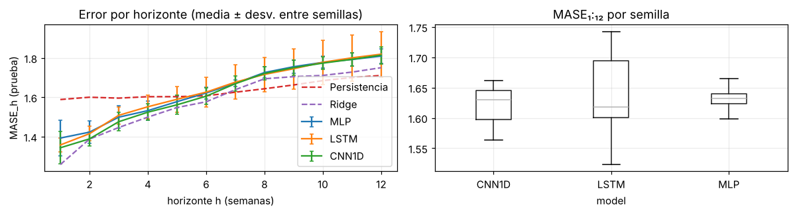
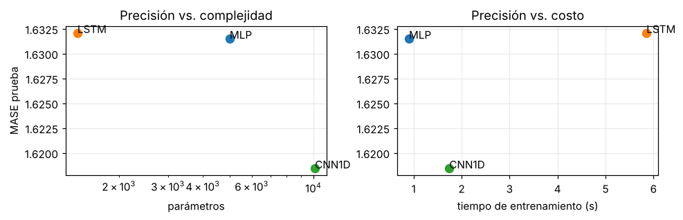
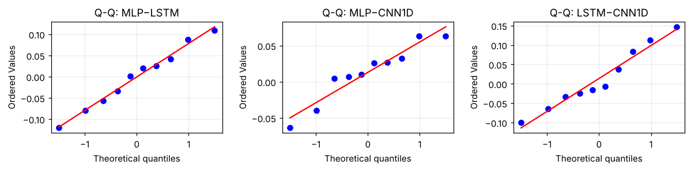
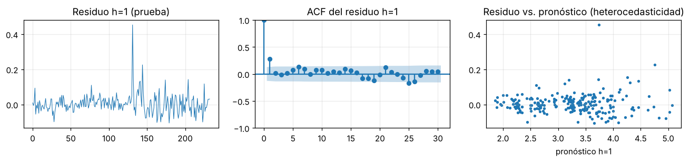
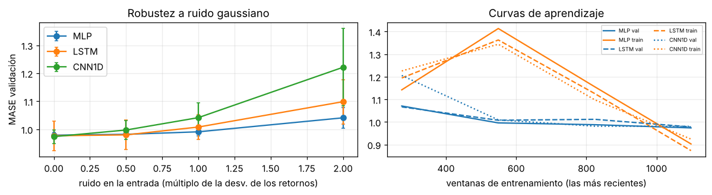

6. Benchmark de los modelos base, definición del baseline e inferencia#
Todas las cifras de este capítulo se calculan al ejecutar las celdas a partir de los resultados de scripts/run_final.py (10 semillas por modelo, prueba evaluada una sola vez por corrida).
%matplotlib inline
import sys, warnings, json
from pathlib import Path
ROOT = Path.cwd()
while not (ROOT / "src").exists(): ROOT = ROOT.parent
sys.path.insert(0, str(ROOT / "src"))
warnings.filterwarnings("ignore")
import numpy as np, pandas as pd, matplotlib.pyplot as plt
from IPython.display import Markdown, display
plt.rcParams.update({"figure.dpi": 110, "axes.grid": True, "grid.alpha": .25, "figure.figsize": (9, 3.4)})
from tsbase import config as C
from tsbase.data import load_energy, Windows, sha256, energy_path
import itertools
from scipy import stats as sst
from tsbase import stats as S
from statsmodels.stats.diagnostic import acorr_ljungbox
from statsmodels.tsa.stattools import bds
runs = pd.read_csv(ROOT / "results/final_runs.csv"); refs = pd.read_csv(ROOT / "results/reference_models.csv")
M = ["MLP", "LSTM", "CNN1D"]; P = "test_MASE_1:12"
truth = np.load(ROOT / "results/preds/truth_test.npy"); org = np.load(ROOT / "results/preds/origins_test.npy")
preds = {m: np.stack([np.load(ROOT / f"results/preds/{m}_{s}.npy") for s in sorted(runs.seed.unique())]) for m in M} # (R, N, H)
mat = lambda col: runs.pivot(index="seed", columns="model", values=col)[M]
R = runs.seed.nunique(); print("Semillas por modelo:", R, "| ventanas de prueba:", len(truth))
Semillas por modelo: 10 | ventanas de prueba: 233
6.1 Comparación tabular#
rows = []
for m in M:
r = runs[runs.model == m]; x = r[P].values; lo, hi = S.t_ci(x); bl, bh = S.boot_ci(x)
rows.append({"Modelo": m, "MASE₁:₁₂ (prueba)": f"{x.mean():.4f} ± {x.std(ddof=1):.4f}", "IC95% t": f"[{lo:.4f}, {hi:.4f}]", "IC95% bootstrap": f"[{bl:.4f}, {bh:.4f}]",
"RMSE₁:₁₂ (USD/gal)": f"{r['test_RMSE_1:12'].mean():.4f} ± {r['test_RMSE_1:12'].std(ddof=1):.4f}", "MAE₁:₁₂": f"{r['test_MAE_1:12'].mean():.4f} ± {r['test_MAE_1:12'].std(ddof=1):.4f}",
"sMAPE₁:₁₂ %": f"{r['test_sMAPE_1:12'].mean():.2f} ± {r['test_sMAPE_1:12'].std(ddof=1):.2f}",
"MASE val": f"{r['val_MASE_1:12'].mean():.4f} ± {r['val_MASE_1:12'].std(ddof=1):.4f}",
"Parámetros": int(r.n_params.iloc[0]), "Entren. (s)": f"{r.train_time_s.mean():.1f}", "Inferencia (ms/ventana)": f"{r.infer_ms_per_window.mean():.3f}"})
tab = pd.DataFrame(rows); display(tab.style.hide(axis="index"))
display(Markdown("**Referencias (deterministas, sin semillas):**"))
refs[["model", "test_MASE_1:12", "test_RMSE_1:12", "test_MAE_1:12", "test_sMAPE_1:12", "test_MASE_h1", "test_MASE_h12"]].round(4)
| Modelo | MASE₁:₁₂ (prueba) | IC95% t | IC95% bootstrap | RMSE₁:₁₂ (USD/gal) | MAE₁:₁₂ | sMAPE₁:₁₂ % | MASE val | Parámetros | Entren. (s) | Inferencia (ms/ventana) |
|---|---|---|---|---|---|---|---|---|---|---|
| MLP | 1.6315 ± 0.0200 | [1.6172, 1.6458] | [1.6196, 1.6432] | 0.2779 ± 0.0035 | 0.2113 ± 0.0024 | 6.49 ± 0.10 | 0.9789 ± 0.0107 | 5004 | 0.9 | 0.001 |
| LSTM | 1.6321 ± 0.0741 | [1.5791, 1.6851] | [1.5885, 1.6756] | 0.2852 ± 0.0100 | 0.2117 ± 0.0110 | 6.41 ± 0.35 | 0.9767 ± 0.0530 | 1420 | 5.9 | 0.006 |
| CNN1D | 1.6184 ± 0.0339 | [1.5942, 1.6427] | [1.5976, 1.6371] | 0.2775 ± 0.0071 | 0.2104 ± 0.0043 | 6.51 ± 0.15 | 0.9736 ± 0.0240 | 10124 | 1.7 | 0.004 |
Referencias (deterministas, sin semillas):
| model | test_MASE_1:12 | test_RMSE_1:12 | test_MAE_1:12 | test_sMAPE_1:12 | test_MASE_h1 | test_MASE_h12 | |
|---|---|---|---|---|---|---|---|
| 0 | Persistencia | 1.6356 | 0.2819 | 0.2067 | 6.2848 | 1.5886 | 1.7110 |
| 1 | Ingenuo estacional (m=52) | 6.9350 | 0.7948 | 0.6444 | 20.8883 | 21.6931 | 3.2855 |
| 2 | Ridge lineal (alpha=1) | 1.5786 | 0.2700 | 0.2051 | 6.2365 | 1.2580 | 1.7506 |
# error por horizonte (media sobre semillas)
fig, ax = plt.subplots(1, 2, figsize=(11, 3.2)); hs = np.arange(1, C.H + 1)
sc = Windows(load_energy()[C.TARGET].values).mase_scale()
for m in M:
mase_h = np.array([(np.abs(truth - p).mean(0) / sc) for p in preds[m]]); ax[0].errorbar(hs, mase_h.mean(0), mase_h.std(0, ddof=1), label=m, capsize=2)
for k, f in [("Persistencia", "Persistencia.npy"), ("Ridge", "Ridge.npy")]:
ax[0].plot(hs, np.abs(truth - np.load(ROOT / "results/preds" / f)).mean(0) / sc, "--", label=k)
ax[0].set_xlabel("horizonte h (semanas)"); ax[0].set_ylabel("MASE_h (prueba)"); ax[0].legend(); ax[0].set_title("Error por horizonte (media ± desv. entre semillas)")
runs.boxplot(column=P, by="model", ax=ax[1]); ax[1].set_title("MASE₁:₁₂ por semilla"); plt.suptitle(""); plt.tight_layout(); plt.show()

6.2 Ranking y trade-off#
rk = runs.groupby("model").agg(MASE=(P, "mean"), params=("n_params", "first"), t=("train_time_s", "mean")).sort_values("MASE"); rk["rango"] = range(1, 4); display(rk.round(4))
fig, ax = plt.subplots(1, 2, figsize=(9, 3))
for m in M: ax[0].scatter(rk.loc[m, "params"], rk.loc[m, "MASE"], s=60); ax[0].annotate(m, (rk.loc[m, "params"], rk.loc[m, "MASE"]))
ax[0].set_xscale("log"); ax[0].set_xlabel("parámetros"); ax[0].set_ylabel("MASE prueba"); ax[0].set_title("Precisión vs. complejidad")
for m in M: ax[1].scatter(rk.loc[m, "t"], rk.loc[m, "MASE"], s=60); ax[1].annotate(m, (rk.loc[m, "t"], rk.loc[m, "MASE"]))
ax[1].set_xlabel("tiempo de entrenamiento (s)"); ax[1].set_title("Precisión vs. costo"); plt.tight_layout(); plt.show()
| MASE | params | t | rango | |
|---|---|---|---|---|
| model | ||||
| CNN1D | 1.6184 | 10124 | 1.7435 | 1 |
| MLP | 1.6315 | 5004 | 0.9029 | 2 |
| LSTM | 1.6321 | 1420 | 5.8539 | 3 |

6.3 Diferencias entre modelos base (ΔRMSE %, ΔMAE %, tamaño de efecto)#
\(\Delta\mathrm{RMSE}=\frac{\mathrm{RMSE}_{ref}-\mathrm{RMSE}_{modelo}}{\mathrm{RMSE}_{ref}}\times100\,\%\) (positivo = el modelo mejora a la referencia).
mr = runs.groupby("model")["test_RMSE_1:12"].mean(); ma = runs.groupby("model")["test_MAE_1:12"].mean(); mm = runs.groupby("model")[P].mean()
best, worst = mm.idxmin(), mm.idxmax(); pers = refs.set_index("model").loc["Persistencia"]
d = lambda ref, mod, s: 100 * (s[ref] - s[mod]) / s[ref]
out = []
for m in M:
out.append({"modelo": m, "ΔRMSE% vs peor base": d(worst, m, mr), "ΔRMSE% vs mejor base": d(best, m, mr), "ΔMAE% vs peor base": d(worst, m, ma), "ΔMAE% vs mejor base": d(best, m, ma),
"ΔRMSE% vs persistencia": 100 * (pers["test_RMSE_1:12"] - mr[m]) / pers["test_RMSE_1:12"], "ΔMASE% vs persistencia": 100 * (pers[P] - mm[m]) / pers[P]})
print(f"Mejor base por MASE₁:₁₂ de prueba: {best} | peor: {worst}"); pd.DataFrame(out).set_index("modelo").round(3)
Mejor base por MASE₁:₁₂ de prueba: CNN1D | peor: LSTM
| ΔRMSE% vs peor base | ΔRMSE% vs mejor base | ΔMAE% vs peor base | ΔMAE% vs mejor base | ΔRMSE% vs persistencia | ΔMASE% vs persistencia | |
|---|---|---|---|---|---|---|
| modelo | ||||||
| MLP | 2.566 | -0.149 | 0.164 | -0.438 | 1.435 | 0.249 |
| LSTM | 0.000 | -2.786 | 0.000 | -0.603 | -1.160 | 0.213 |
| CNN1D | 2.711 | 0.000 | 0.599 | 0.000 | 1.582 | 1.048 |
6.4 Verificación de supuestos y pruebas pareadas (apareadas por semilla)#
pairs = list(itertools.combinations(M, 2)); mt = mat(P)
fig, ax = plt.subplots(1, 3, figsize=(11, 2.8))
for a, (u, v) in zip(ax, pairs):
sst.probplot((mt[u] - mt[v]).values, plot=a); a.set_title(f"Q-Q: {u}−{v}")
plt.tight_layout(); plt.show()
rep = {f"{u} − {v}": S.paired_report(mt[u].values, mt[v].values) for u, v in pairs}
tt = pd.DataFrame(rep).T; tt["t_p_Holm"] = S.holm(tt["t_p"].astype(float).values)
wp = tt["wilcoxon_p"].astype(float).values; tt["wilcoxon_p_Holm"] = S.holm(np.nan_to_num(wp, nan=1.0))
cols = ["mean_diff", "t_ci95", "boot_ci95", "shapiro_p", "t_p", "t_p_Holm", "wilcoxon_p", "wilcoxon_p_Holm", "cohen_dz", "cliff_delta", "prob_superiority"]
tt[cols]

| mean_diff | t_ci95 | boot_ci95 | shapiro_p | t_p | t_p_Holm | wilcoxon_p | wilcoxon_p_Holm | cohen_dz | cliff_delta | prob_superiority | |
|---|---|---|---|---|---|---|---|---|---|---|---|
| MLP − LSTM | -0.000576 | (-0.052645035299936895, 0.051492860697293315) | (-0.04342888042739554, 0.041889465542619485) | 0.96651 | 0.980579 | 1.000000 | 1.0 | 1.000000 | -0.007915 | 0.14 | 0.4 |
| MLP − CNN1D | 0.013072 | (-0.015665663437405566, 0.04180892375299006) | (-0.011024929563857136, 0.03523811546536052) | 0.349495 | 0.330348 | 0.991045 | 0.322266 | 0.966797 | 0.325392 | 0.14 | 0.2 |
| LSTM − CNN1D | 0.013648 | (-0.04319930803950135, 0.07049474295772944) | (-0.032050230557129904, 0.06182904928091046) | 0.698918 | 0.600255 | 1.000000 | 0.769531 | 1.000000 | 0.171741 | 0.04 | 0.6 |
Diferencia = primer modelo − segundo en MASE₁:₁₂ (negativa = el primero es mejor). Se reportan p exactos, ajustados (Holm, 3 comparaciones) y sin ajustar, IC al 95 % (t y bootstrap), \(d_z\) de Cohen pareado, \(\delta\) de Cliff y probabilidad de superioridad. Con \(n=10\) pares el Wilcoxon bilateral exacto sí puede rechazar (p mínimo \(2/2^{10}\approx0.002\)).
fr = S.friedman_nemenyi(mt.values, M); print(f"Friedman (n={fr['n_blocks']} semillas, k=3): χ²={fr['chi2']:.3f}, p={fr['p']:.4f}")
print("Rangos medios:", {k: round(v, 2) for k, v in fr["mean_ranks"].items()}, "| Distancia crítica Nemenyi (α=.05):", round(fr["CD"], 3))
print("Pares con |Δ rango medio| > CD:", [(u, v) for u, v in pairs if abs(fr["mean_ranks"][u] - fr["mean_ranks"][v]) > fr["CD"]] or "ninguno")
vd = S.variance_decomposition(mt.values); print("Descomposición de varianza →", {k: round(v, 6) for k, v in vd.items()})
Friedman (n=10 semillas, k=3): χ²=2.400, p=0.3012
Rangos medios: {'MLP': 2.4, 'LSTM': 1.8, 'CNN1D': 1.8} | Distancia crítica Nemenyi (α=.05): 1.048
Pares con |Δ rango medio| > CD: ninguno
Descomposición de varianza → {'var_seed': 0.002345, 'var_between_models': 6e-05, 'frac_seed': 0.975223}
Potencia y diferencia mínima detectable con el diseño final.
sd = {f"{u} − {v}": float((mt[u] - mt[v]).std(ddof=1)) for u, v in pairs}
bm = float(mm.min()); dabs = C.DELTA_REL * bm
pd.DataFrame({"σ̂_d": sd, "δ absoluto (3% de MASE del mejor)": dabs,
f"dif. mín. detectable (R={R}, m=3, pot. .80)": {k: S.min_detectable(v, R, m=3) for k, v in sd.items()},
"potencia aprox. para detectar δ (m=3)": {k: float(sst.norm.cdf(abs(dabs) / (v / np.sqrt(R)) - sst.norm.ppf(1 - .05 / 3 / 2))) for k, v in sd.items()}}).round(4)
| σ̂_d | δ absoluto (3% de MASE del mejor) | dif. mín. detectable (R=10, m=3, pot. .80) | potencia aprox. para detectar δ (m=3) | |
|---|---|---|---|---|
| MLP − LSTM | 0.0728 | 0.0486 | 0.0745 | 0.3880 |
| MLP − CNN1D | 0.0402 | 0.0486 | 0.0411 | 0.9234 |
| LSTM − CNN1D | 0.0795 | 0.0486 | 0.0813 | 0.3221 |
Nota: δ se declaró como 3 % relativo; su valor absoluto depende de la partición (≈0.029 en el piloto sobre validación y ≈0.049 sobre la prueba, donde la MASE es mayor).
Equivalencia (TOST, margen δ). La ausencia de significancia no es equivalencia; para afirmar que dos modelos base son equivalentes se usa TOST pareado con margen \(\delta\) (p < 0.05 ⇒ equivalencia dentro de ±δ).
pd.DataFrame({f"{u} − {v}": {"TOST p": S.tost_paired((mt[u] - mt[v]).values, dabs)} for u, v in pairs}).T.round(4)
| TOST p | |
|---|---|
| MLP − LSTM | 0.0334 |
| MLP − CNN1D | 0.0105 |
| LSTM − CNN1D | 0.0991 |
6.5 Diebold–Mariano por horizonte (corrección HLN) y diagnóstico de residuos#
Se usan los pronósticos promediados sobre las 10 semillas de cada modelo (un pronóstico por modelo) y pérdida cuadrática (coherente con el MSE de entrenamiento); entre paréntesis, el mismo contraste con pérdida absoluta. Convención: ΔMSE (u−v) > 0 y estadístico DM > 0 ⇒ el segundo modelo del par es más preciso. Por limitación de potencia, la comparación entre pronósticos promediados no equivale a comparar corridas individuales.
avg = {m: preds[m].mean(0) for m in M}
rows = []
for u, v in pairs:
for h in (1, 4, 12):
e1, e2 = (truth[:, h-1] - avg[u][:, h-1]), (truth[:, h-1] - avg[v][:, h-1])
s2, p2 = S.dm_test(e1, e2, h=h, power=2); s1, p1 = S.dm_test(e1, e2, h=h, power=1)
rows.append({"par": f"{u} vs {v}", "h": h, "ΔMSE (u−v)": float((e1**2).mean() - (e2**2).mean()), "DM-HLN (cuad.)": s2, "p": p2, "DM-HLN (abs.)": s1, "p (abs.)": p1})
dm = pd.DataFrame(rows); dm["p Holm (por horizonte, 3 pares)"] = np.nan
for h in (1, 4, 12):
ix = dm.index[dm.h == h]; dm.loc[ix, "p Holm (por horizonte, 3 pares)"] = S.holm(dm.loc[ix, "p"].values)
dm.round(4)
| par | h | ΔMSE (u−v) | DM-HLN (cuad.) | p | DM-HLN (abs.) | p (abs.) | p Holm (por horizonte, 3 pares) | |
|---|---|---|---|---|---|---|---|---|
| 0 | MLP vs LSTM | 1 | 0.0001 | 0.7899 | 0.4304 | -0.2895 | 0.7724 | 0.4304 |
| 1 | MLP vs LSTM | 4 | -0.0012 | -0.3675 | 0.7136 | -0.2816 | 0.7785 | 1.0000 |
| 2 | MLP vs LSTM | 12 | -0.0093 | -0.4129 | 0.6801 | 0.0102 | 0.9918 | 1.0000 |
| 3 | MLP vs CNN1D | 1 | 0.0005 | 2.9215 | 0.0038 | 2.1130 | 0.0357 | 0.0115 |
| 4 | MLP vs CNN1D | 4 | 0.0011 | 0.5266 | 0.5990 | 0.1439 | 0.8857 | 1.0000 |
| 5 | MLP vs CNN1D | 12 | -0.0085 | -0.7344 | 0.4635 | -0.1121 | 0.9108 | 1.0000 |
| 6 | LSTM vs CNN1D | 1 | 0.0004 | 2.2490 | 0.0255 | 2.4019 | 0.0171 | 0.0509 |
| 7 | LSTM vs CNN1D | 4 | 0.0023 | 0.5053 | 0.6138 | 0.3035 | 0.7618 | 1.0000 |
| 8 | LSTM vs CNN1D | 12 | 0.0008 | 0.0268 | 0.9787 | -0.0419 | 0.9666 | 1.0000 |
# residuos del mejor modelo base (pronostico promedio, h=1)
res1 = (truth[:, 0] - avg[best][:, 0]); resh = [(truth[:, h-1] - avg[best][:, h-1]) for h in (1, 4, 12)]
lb = acorr_ljungbox(res1, lags=[5, 10, 20], return_df=True, model_df=0)
b2 = bds(res1, max_dim=3)
print(f"Mejor base: {best} | residuos h=1 (n={len(res1)})")
display(lb.round(4)); print(f"BDS dim=2: est={b2[0][0]:.3f}, p={b2[1][0]:.4f} | dim=3: est={b2[0][1]:.3f}, p={b2[1][1]:.4f}")
print(f"Sesgo medio de residuo h=1: {res1.mean():.4f} USD (desv {res1.std():.4f}) | Shapiro p = {sst.shapiro(res1)[1]:.4g}")
fig, ax = plt.subplots(1, 3, figsize=(12, 2.9))
ax[0].plot(res1, lw=.7); ax[0].set_title("Residuo h=1 (prueba)")
from statsmodels.graphics.tsaplots import plot_acf; plot_acf(res1, lags=30, ax=ax[1]); ax[1].set_title("ACF del residuo h=1")
ax[2].scatter(avg[best][:, 0], res1, s=6); ax[2].set_xlabel("pronóstico h=1"); ax[2].set_title("Residuo vs. pronóstico (heterocedasticidad)"); plt.tight_layout(); plt.show()
Mejor base: CNN1D | residuos h=1 (n=233)
BDS dim=2: est=3.150, p=0.0016 | dim=3: est=3.324, p=0.0009
Sesgo medio de residuo h=1: 0.0039 USD (desv 0.0558) | Shapiro p = 6.467e-15
| lb_stat | lb_pvalue | |
|---|---|---|
| 5 | 20.2486 | 0.0011 |
| 10 | 29.6338 | 0.0010 |
| 20 | 40.8785 | 0.0039 |

6.6 Robustez, curvas de aprendizaje y sobreajuste (solo validación)#
rb = pd.read_csv(ROOT / "results/robustness_val.csv"); g = rb.groupby(["model", "noise_k"]).val_MASE.agg(["mean", "std"]).unstack(0)
fig, ax = plt.subplots(1, 2, figsize=(11, 3.1))
for m in M: ax[0].errorbar(g.index, g[("mean", m)], g[("std", m)], marker="o", label=m, capsize=2)
ax[0].set_xlabel("ruido en la entrada (múltiplo de la desv. de los retornos)"); ax[0].set_ylabel("MASE validación"); ax[0].legend(); ax[0].set_title("Robustez a ruido gaussiano")
lc = pd.read_csv(ROOT / "results/learning_curves.csv"); a = lc.groupby(["model", "n_train"])[["train_MASE", "val_MASE"]].mean()
for m, ls in zip(M, ["-", "--", ":"]):
ax[1].plot(a.loc[m].index, a.loc[m].val_MASE, ls, c="C0", label=f"{m} val"); ax[1].plot(a.loc[m].index, a.loc[m].train_MASE, ls, c="C1", label=f"{m} train")
ax[1].set_xlabel("ventanas de entrenamiento (las más recientes)"); ax[1].set_title("Curvas de aprendizaje"); ax[1].legend(fontsize=6, ncol=2); plt.tight_layout(); plt.show()
gap = runs.groupby("model").apply(lambda r: pd.Series({"MASE train": r.train_MASE.mean(), "MASE val": r["val_MASE_1:12"].mean(), "MASE test": r[P].mean(),
"brecha (val−train)/train %": 100 * (r["val_MASE_1:12"].mean() - r.train_MASE.mean()) / r.train_MASE.mean(), "brecha (test−val)/val %": 100 * (r[P].mean() - r["val_MASE_1:12"].mean()) / r["val_MASE_1:12"].mean()}))
gap.round(3)

| MASE train | MASE val | MASE test | brecha (val−train)/train % | brecha (test−val)/val % | |
|---|---|---|---|---|---|
| model | |||||
| CNN1D | 0.876 | 0.974 | 1.618 | 11.112 | 66.240 |
| LSTM | 0.890 | 0.977 | 1.632 | 9.698 | 67.097 |
| MLP | 0.919 | 0.979 | 1.632 | 6.514 | 66.669 |
6.7 Error por segmento (prueba)#
dts = load_energy().index; tdates = dts[org + 1]
err = np.abs(truth - avg[best]).mean(1); ep = np.abs(truth - np.load(ROOT / "results/preds/Persistencia.npy")).mean(1)
seg = pd.DataFrame({"año": tdates.year, f"MAE {best}": err, "MAE persistencia": ep, "precio medio (USD)": truth.mean(1)}).groupby("año").mean().round(3)
seg["razón MAE modelo/persistencia"] = (seg[f"MAE {best}"] / seg["MAE persistencia"]).round(3); display(seg)
q = pd.qcut(truth.mean(1), 4, labels=["Q1 bajo", "Q2", "Q3", "Q4 alto"])
pd.DataFrame({f"MAE {best}": err, "MAE persistencia": ep, "MAE / precio medio (%)": 100 * err / truth.mean(1)}).groupby(q).mean().round(3)
| MAE CNN1D | MAE persistencia | precio medio (USD) | razón MAE modelo/persistencia | |
|---|---|---|---|---|
| año | ||||
| 2019 | 0.111 | 0.060 | 2.652 | 1.850 |
| 2020 | 0.169 | 0.163 | 2.250 | 1.037 |
| 2021 | 0.174 | 0.142 | 3.205 | 1.225 |
| 2022 | 0.355 | 0.392 | 4.054 | 0.906 |
| 2023 | 0.173 | 0.176 | 3.612 | 0.983 |
| 2024 | 0.152 | 0.238 | 3.441 | 0.639 |
| MAE CNN1D | MAE persistencia | MAE / precio medio (%) | |
|---|---|---|---|
| Q1 bajo | 0.165 | 0.156 | 7.294 |
| Q2 | 0.170 | 0.140 | 5.628 |
| Q3 | 0.201 | 0.194 | 5.696 |
| Q4 alto | 0.296 | 0.338 | 7.021 |
6.8 Definición del baseline y margen de mejora disponible#
x = runs[runs.model == best][P].values; lo, hi = S.t_ci(x); bl, bh = S.boot_ci(x)
pm = pers[P]; rid = refs.set_index("model").filter(like="Ridge", axis=0)[P].iloc[0]
mde = S.min_detectable(float(np.mean(list(sd.values()))), R, m=1)
base = pd.Series({"Baseline (mejor modelo base)": best, "MASE₁:₁₂ prueba (media ± desv.)": f"{x.mean():.4f} ± {x.std(ddof=1):.4f}", "IC95% t": f"[{lo:.4f}, {hi:.4f}]", "IC95% bootstrap": f"[{bl:.4f}, {bh:.4f}]",
"RMSE₁:₁₂ (USD/gal)": round(float(mr[best]), 4), "MASE persistencia": round(float(pm), 4), "MASE Ridge lineal": round(float(rid), 4),
"δ práctico (3 % de MASE) → MASE objetivo": round(float(x.mean() * (1 - C.DELTA_REL)), 4),
"mejora mínima detectable con R=10 (aprox. 1 comparación)": round(mde, 4),
"umbral para un modelo avanzado (el más exigente de los dos)": round(float(x.mean() - max(C.DELTA_REL * x.mean(), mde)), 4)})
display(base.to_frame("valor")); print("\nNota: el umbral estadístico debe leerse junto con la variabilidad entre semillas; ver discusión (Cap. 7).")
| valor | |
|---|---|
| Baseline (mejor modelo base) | CNN1D |
| MASE₁:₁₂ prueba (media ± desv.) | 1.6184 ± 0.0339 |
| IC95% t | [1.5942, 1.6427] |
| IC95% bootstrap | [1.5976, 1.6371] |
| RMSE₁:₁₂ (USD/gal) | 0.2775 |
| MASE persistencia | 1.6356 |
| MASE Ridge lineal | 1.5786 |
| δ práctico (3 % de MASE) → MASE objetivo | 1.5699 |
| mejora mínima detectable con R=10 (aprox. 1 comparación) | 0.0568 |
| umbral para un modelo avanzado (el más exigente de los dos) | 1.5616 |
Nota: el umbral estadístico debe leerse junto con la variabilidad entre semillas; ver discusión (Cap. 7).